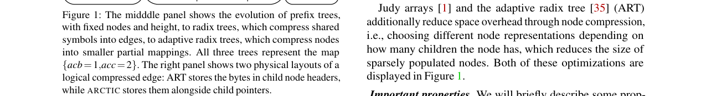
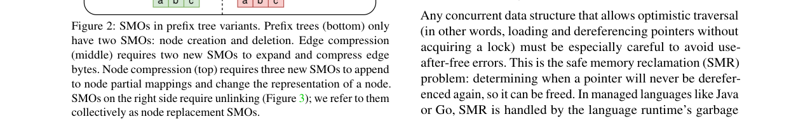
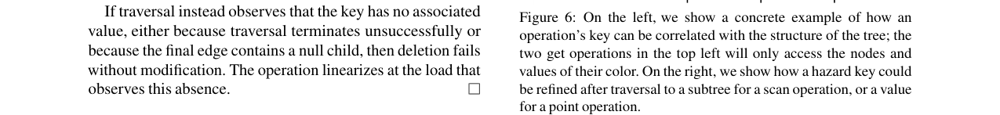
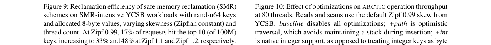
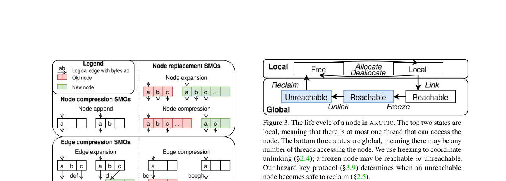
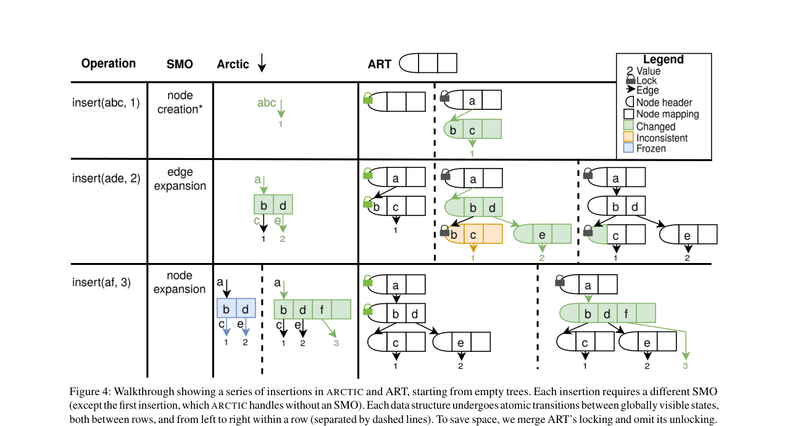
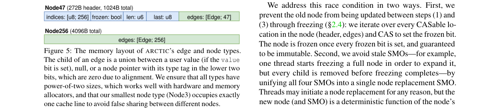

Arctic: A Practical Lock-Free Adaptive Radix Tree
总结
索引结构是现代系统基础设施的核心组件，支撑着持久化键值存储、分布式缓存和数据库等关键应用。然而，现有的索引结构往往难以同时满足高性能、无锁以及范围扫描这三个关键需求：哈希表性能优异但缺乏范围扫描能力；基于锁的B+树或ART（自适应基数树）在多核高并发场景下容易因锁竞争导致性能瓶颈；而现有的无锁结构（如SMART）则在内存使用和回收机制上存在显著缺陷。
As-is：当前的基准方案（如ART、B+树）通常依赖锁机制来保证并发安全，这导致在高线程数（超过物理核心数）场景下，线程可能因等待锁而阻塞，无法保证强进度保证。同时，现有的无锁结构要么无法支持高效的范围扫描，要么在内存管理和回收上效率低下，难以在实际生产环境中替代锁基方案。
To-be：本文提出的 Arctic 是首个在性能上超越锁基方案的无锁自适应基数树。它通过精心设计的元数据布局和基于“冻结”的协调协议，实现了无锁操作且不引入额外的指针间接层。Arctic 提出了一种新颖的“危险键”安全内存回收方案，利用操作键来近似可达指针，从而在保证性能的同时解决了内存回收问题。在 YCSB 基准测试中，Arctic 在 80 线程下相比 ART 的吞吐量提升最高可达 7.7 倍（YCSB-A）。此外，将 Arctic 集成到 RocksDB 和 Turso 中，使其在写密集型基准测试中的吞吐量分别提升了 40% 和 12%。
背景
2.1 无锁
无锁是指在任何执行序列中，只要持续调用操作，至少有一个操作能在有限步骤内完成。数据结构是无锁的，意味着无论调度如何，线程总能取得进展。即使某些线程挂起或崩溃，其他线程也能继续执行，因为没有任何线程可以阻塞其他线程。无锁数据结构通常使用硬件同步原语（如 CAS 指令）来实现。
2.2 前缀树与基数树
前缀树是一种将键（符号序列）映射到值的关联数据结构。基数树是前缀树的变体，通过压缩共享符号到边上来减少树的高度。ART（自适应基数树）进一步通过节点压缩来减少稀疏节点的空间开销。ART 将边字节存储在子节点头部，而 Arctic 将边字节存储在父边中。
2.3 结构修改操作 (SMOs)
SMOs 是指修改数据结构物理状态但不改变其逻辑状态的操作。在基数树中，SMOs 包括节点创建、删除、边压缩/扩展以及节点替换。随着边压缩和节点压缩的引入，SMOs 的复杂性和数量显著增加。例如，节点替换操作需要解链旧节点并链接新节点，这通常需要修改多个内存位置。
2.4 冻结
冻结机制用于解决解链（unlink）与并发写入之间的竞争条件。在 Arctic 中，当节点需要被解链时，线程会遍历节点中所有可 CAS 的位置并设置“冻结位”。这确保了在解链过程中，节点内容是不可变的。写入线程在 CAS 时会检查冻结位，如果被冻结则可能需要回溯或重试。
2.5 安全内存回收 (SMR)
SMR 问题在于确定何时释放不再被访问的指针。现有的方案有权衡：
* 危险指针：记录精确的访问指针集，保证内存回收效率，但每次指针解引用都有开销。
* 基于纪元：在操作间跟踪静止期，性能高，但单个线程的停滞会阻塞所有内存回收。
问题
现有的索引结构无法同时满足高性能、无锁和范围扫描这三个要求：
1. 哈希表：虽然支持高并发和锁-free 实现，但无法提供高效的范围扫描。
2. 跳表：虽然有序且支持范围扫描，但缓存局部性差，且在高并发下高层级列表容易产生竞争。
3. 基于锁的 B+树和 ART：虽然性能较好，但依赖锁机制。在高线程数场景下，持有锁的线程阻塞会严重影响其他线程的进度，违背了无锁的强进度保证。
4. 现有的无锁结构（如 SMART）：虽然是无锁的，但在内存使用和回收机制上表现不佳，限制了其实际应用。
因此，业界急需一种既能提供高性能，又能保证无锁特性，同时支持高效范围扫描的索引结构。
解决方案
Arctic 是基于 ART 的无锁自适应基数树，通过以下核心设计实现了上述目标：
3.2 元数据布局
Arctic 重新设计了元数据布局以支持原子操作：
* 16B 边：为了容纳更多的边字节并支持原子操作，Arctic 使用 16 字节的边，而 ART 使用 8 字节。
* 对齐与大小：所有节点类型的大小均为 2 的幂次方，以优化硬件和内存分配器。
* 类型标签：节点类型标签被移至父边中，减少了缓存未命中。
* 冻结位：每个可 CAS 的位置（头部和边）都包含一个冻结位，用于协调节点替换。

3.3 原子 SMOs
Arctic 通过统一协议实现了所有 SMOs 的原子性：
* 边扩展：创建新节点并原子 CAS 原边。
* 节点替换：这是核心机制。线程冻结旧节点（设置所有 CAS 位置的冻结位），复制其内容到新节点，然后原子 CAS 替换旧节点指针。这种统一协议避免了不一致状态。
* 节点追加：对于 Node3 和 Node15，原子 CAS 头部；对于 Node47，引入 `last` 字段和帮助协议，确保在更新数组和长度时的原子性。

3.9 危险键
Arctic 提出了一种新颖的安全内存回收方案——危险键。
* 核心思想：利用操作键与树结构的关联性。一个操作键 `k` 只会访问前缀为 `k` 前缀的节点。
* 机制：在操作开始时发布一个“危险键”，回收时检查已退休的分配是否被该键保护（即分配的前缀是否是操作键的前缀）。
* 优势：相比危险指针（每次解引用都检查），危险键只需在操作开始时发布一次，开销更低。相比基于纪元，它对线程停滞不那么敏感。

3.8 正确性
Arctic 证明了其正确性：
* 线性化：成功的插入/删除/获取操作在特定的 CAS 或加载点线性化。
* 无锁：通过反证法证明，在有限步骤后，节点冻结和结构变化必然停止，从而保证操作终止。
测试结果
4.1 实验设置
* 硬件：Intel Xeon Platinum 8380，2.30 GHz，40 核，120 MiB LLC。
* 基准测试：YCSB (A-E)，涵盖 6 种键分布（IPv4, seq-u64, rand-u64, twitter, uuid-v4, email, url）。
* 基线：ART, DashMap, FB+-tree, Wormhole。
4.2 YCSB 性能
Arctic 在整数键上表现优异，在许多配置下超越了锁基的 ART 和哈希表。
* 吞吐量提升：在 80 线程下，相比 ART 的吞吐量提升范围为 1.3 倍（YCSB-C）到 7.7 倍（YCSB-A）。
* 内存开销：对于整数键，开销为 ART 的 0.97x - 1.5x；对于字符串键，开销仅为 ART 的 0.19x - 0.61x。

4.3 系统集成
将 Arctic 集成到 RocksDB 和 Turso 中：
* RocksDB：在写密集型基准测试中，相比默认的跳表索引，吞吐量提升了 40%。
* Turso：在写密集型基准测试中，吞吐量提升了 12%。
4.4 内存回收效率
Arctic 的危险键方案在低到中等倾斜的负载下表现良好。它比危险指针开销更低，且比基于纪元的方法更能容忍线程停滞。

4.5 优化
* 乐观遍历：仅在需要回溯时才维护栈，极大减少了回溯开销。
* SIMD：用于 Node15 的排序和 Node47 的遍历，以及 Node3 的分支查找。


